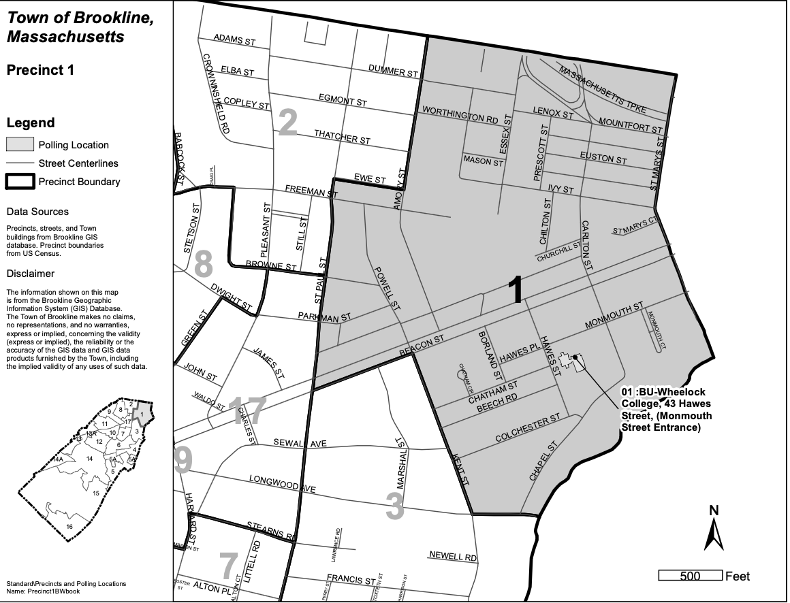

Brookline's Precinct 1
Welcome to Brookline's Precinct 1 website, created by Precinct 1 Town Meeting representatives to keep you connected to what's happening in our precinct and across the Town of Brookline.
P1 Town Meeting Members
P1 Voting Location
May 5 Election
Annual Town Meeting Warrant
About Precinct 1
Precinct 1 Events and News
Links and Resources
